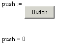
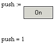
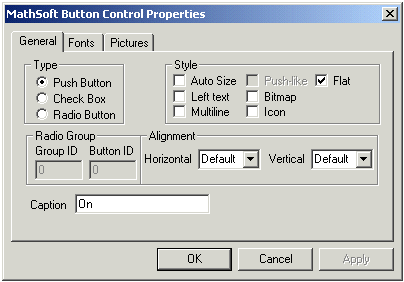

Mathsoft PushButton Control |
| Overview |
The Mathsoft PushButton control allows you to accept user input in the form of button selection and de-selection. By default, push buttons, discussed here, and related check boxes return either a 1 or a 0 (on or off). Radio buttons are used to select between an arbitrarily large collection of choices. More sophisticated behavior is programmed through a script using the Button class, and other features of your scripting language.
You can change the appearance of a button by right-clicking and choosing Properties, or, in some cases, you can access formatting properties through the script.
| Simple Annotated Example |
Here's an example that shows the default script and the resulting behavior of the PushButton control in the worksheet. You can also look at simple and modified examples of the RadioButton control and the CheckBox control.
Dim state
Sub PushBtnEvent_Start()
Rem TODO: Add your code here
End Sub
Sub PushBtnEvent_Exec(Inputs,Outputs)
Outputs(0).value = state
End Sub
Sub PushBtnEvent_Stop()
Rem TODO: Add your code here
End Sub
Sub PushBtn_Click()
If state = 0 Then
state = 1
Else
state = 0
End If
PushBtn.Recalculate()
End Sub

In the script, notice that there are four events, Start, Exec, Stop, and Click. The Exec event is where inputs and outputs can be processed, namely returning the state of the button. Procedures for formatting the button itself can be taken care of in the Start event or using the Properties dialog box. The Click event is most important where push buttons are concerned because that's where state changes are handled and where the control is re-executed after the user has changed their selection. Notice that in a default push button, there is no visible manifestation of a state change. Here is a slightly modified piece of script and a picture showing its effect on the appearance and behavior of the control:
Dim state
Sub PushBtnEvent_Start()
Rem TODO: Add your code here
End Sub
Sub PushBtnEvent_Exec(Inputs,Outputs)
Outputs(0).value = state
End Sub
Sub PushBtnEvent_Stop()
Rem TODO: Add your code here
End Sub
Sub PushBtn_Click()
If state = 0 Then
state = 1
PushBtn.Text = "On"
PushBtn.Flat = True
Else
state = 0
PushBtn.Text = "Off"
PushBtn.Flat = False
End If
PushBtn.Recalculate()
End Sub

In this script, visible elements have been added to the Click event to show the end user the state change. Namely, when the user clicks the button once, the button reads "On" and is displayed as flat. Then, when the user clicks the button again, the button reads "Off" and is displayed as raised.
If you would like to change the appearance of a button without using the script, you can use the Properties Dialog box by right-clicking on the control and selecting Mathsoft Button Control Object > Properties from the menu. You see:

Note that you can only change a single state setting for the PushButton control using the Properties dialog. In order to program appearance effects for both states of the button, you must use the script. Any settings you have programmed into the script override settings made in the Properties dialog.